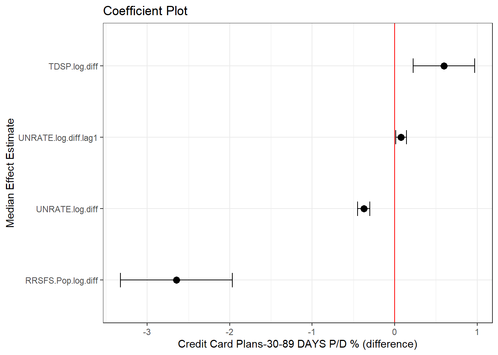
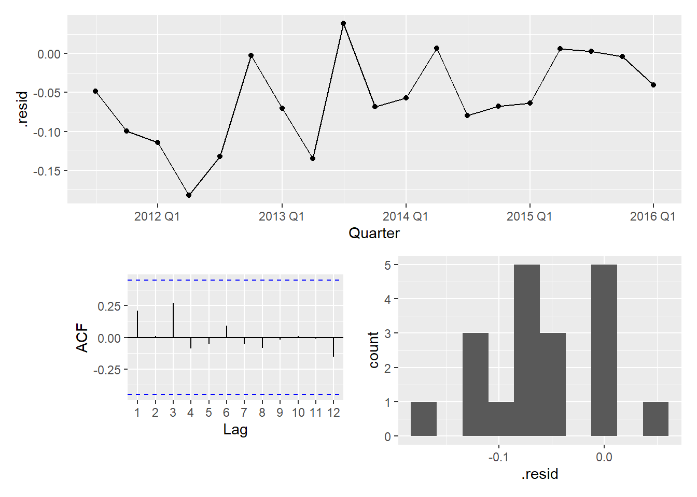
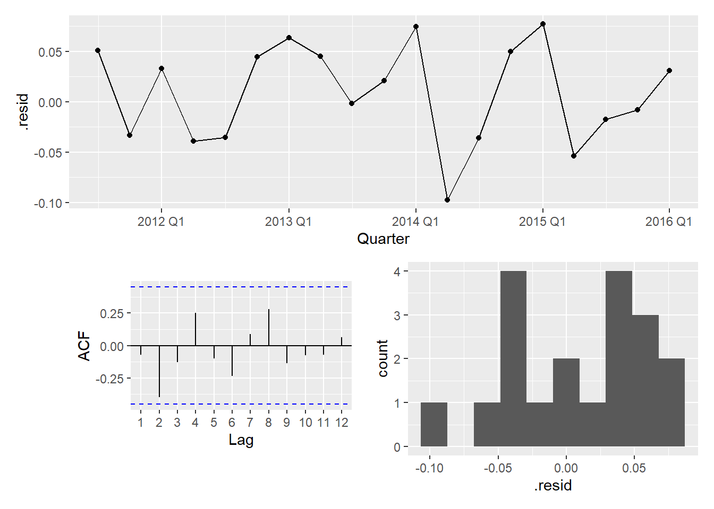
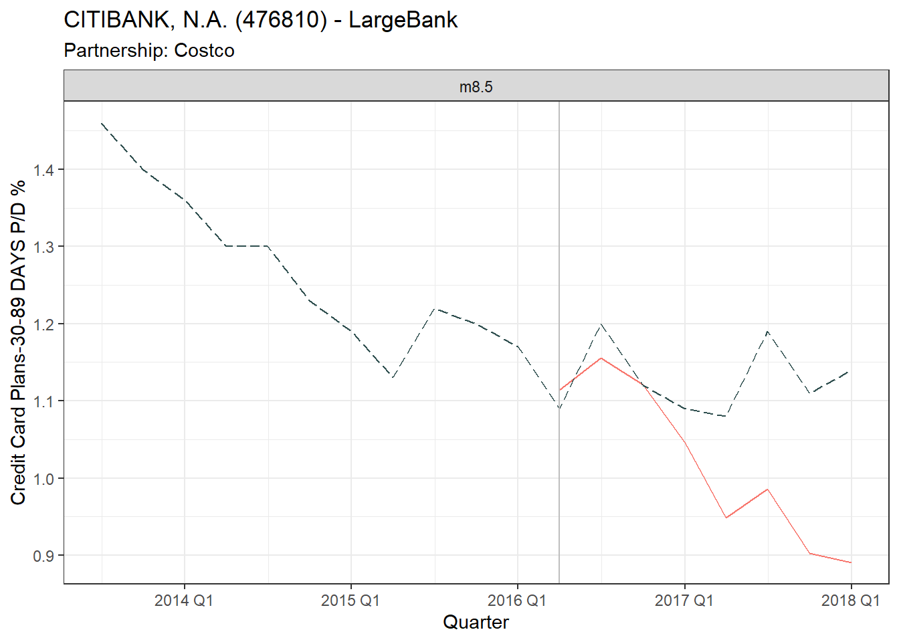
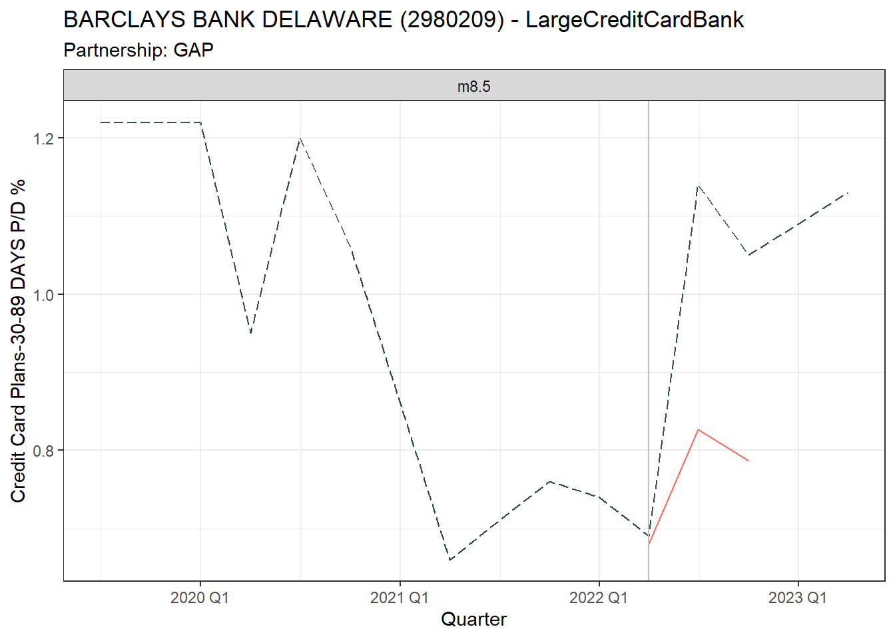

m1 <- lmer(UBPRE524.diff ~ (1 | BankType/BankName), data = estimation_data, REML = FALSE)
m2 <- lmer(UBPRE524.diff ~ (1 + UBPRB538.log.diff | BankType/BankName)+ UNRATE.log.diff + UNRATE.log.diff.lag1 + UNRATE.log.diff.lag2 , data = estimation_data, REML = FALSE)
m3 <- lmer(UBPRE524.diff ~ (1 + UBPRB538.log.diff | BankType/BankName)+ RRSFS.Pop.log.diff + RRSFS.Pop.log.diff.lag1 + RRSFS.Pop.log.diff.lag2 , data = estimation_data, REML = FALSE)
m4 <- lmer(UBPRE524.diff ~ (1 + UBPRB538.log.diff | BankType/BankName) + RRSFS.Pop.log.diff + TDSP.log.diff + B069RC1.Pop.CPI.log.diff.lag1 , data = estimation_data, REML = FALSE)
m5 <- lmer(UBPRE524.diff ~ (1 + UBPRB538.log.diff | BankType/BankName) + RRSFS.Pop.log.diff + TDSP.log.diff + RRSFS.Pop.log.diff.lag1 , data = estimation_data, REML = FALSE)
m6 <- lmer(UBPRE524.diff ~ (1 + UBPRB538.log.diff | BankType/BankName) + RRSFS.Pop.log.diff + UNRATE.log.diff + UNRATE.log.diff.lag1 , data = estimation_data, REML = FALSE)
m7 <- lmer(UBPRE524.diff ~ (1 + UBPRB538.log.diff | BankType/BankName) + TDSP.log.diff + TDSP.log.diff.lag1 + TDSP.log.diff.lag2 , data = estimation_data, REML = FALSE)
m8 <- lmer(UBPRE524.diff ~ (1 + UBPRB538.log.diff + Qtr | BankType/BankName) + UBPRE524.all.log.diff + UBPRE524.group.log.diff,data = estimation_data, REML = FALSE)
m9 <- lmer(UBPRE524.diff ~ (1 + UBPRB538.log.diff | BankType/BankName) + UBPRE524.all.log.diff + UBPRE524.group.log.diff,data = estimation_data, REML = FALSE)8 Hierarchical Model
We know from the market model that the group trend is informative. We can take this idea further and instead of treating each bank’s time series in isolation, we can instead develop a hierarchical model to provide insights into the shared dynamics across series and how individual firms deviate from group patterns.
For example: \[ UBPRE524.diff = (1 + UBPRB538.log.diff | BankType/BankName) + UNRATE.log.diff \]
Random Intercept: Each BankType and BankName combination can have its own Intercept i.e. each bank starts from a different baseline value of our target variable.
Random Slopes: The model allows the effect of bank specific portfolio variables to vary by each BankType/BankName combination.
- UBPRB538: Loans to Individuals for Household, Family, and Other Personal Expenditures:Credit Cards
- UBPR3815: Unused Commitments on Credit Cards
Fixed Effects: Unemployment (UNRATE) is assumed to have the same effect across all banks.
Various models are tested to identify which achieves the lowest AICc value.
8.1 Models
Code
model_comparison <- model.sel( m1, m2, m3, m4, m5, m6, m7, m8, m9, rank = "AICc")
model_comparison |> as.data.frame() |> rownames_to_column(var = "Model")|>
mutate(across(where(is.numeric), \(x) round(x,2))) |>
relocate(df:weight, .after = Model) |>
dplyr::select(Model, df, logLik, AICc, delta, weight) |>
rmarkdown::paged_table() Table 8.1:
AICc Summary. The lower the AICc value, the better the balance between model complexity (number of parameters) and goodness of fit
8.1.1 Model Choice
The best model includes aggregated values for Credit Card Plans-30-89 DAYS P/D %. This allows us to control for the impact of the group trends on the individual banks.
Focusing in on model 8 - we can test variations of this model. Notably, changing the grouping from BankType/BankName to BankName/Qtr improved the model. Qtr is a factor 1 to 4.
m8.1 <- lmer(UBPRE524.diff ~ (1 + UBPRB538.log.diff + Qtr | BankType/BankName) + UBPRE524.all.log.diff + UBPRE524.group.log.diff + TDSP.log.diff.lag1 + TDSP.log.diff.lag2 ,data = estimation_data, REML = FALSE)
m8.2 <- lmer(UBPRE524.diff ~ (1 + UBPRB538.log.diff + Qtr| BankType/BankName) + UBPRE524.all.log.diff + UBPRE524.group.log.diff + RRSFS.Pop.log.diff + UNRATE.log.diff + UNRATE.log.diff.lag1,data = estimation_data, REML = FALSE)
m8.3 <- lmer(UBPRE524.diff ~ (1 + UBPRB538.log.diff + Qtr| BankType/BankName) + UBPRE524.group.log.diff+ TDSP.log.diff + TDSP.log.diff.lag1 + TDSP.log.diff.lag2 ,data = estimation_data, REML = FALSE)
m8.4 <- lmer(UBPRE524.diff ~ (1 + UBPRB538.log.diff + UBPR3815.log.diff + Qtr | BankType/BankName) + UBPRE524.all.log.diff + UBPRE524.group.log.diff + TDSP.log.diff.lag1 + TDSP.log.diff.lag2 ,data = estimation_data, REML = FALSE)
m8.5 <- lmer(UBPRE524.diff ~ (1 + UBPRB538.log.diff + UBPR3815.log.diff + Qtr | BankType/BankName) + UBPRE524.group.log.diff + TDSP.log.diff + TDSP.log.diff.lag1 ,data = estimation_data, REML = FALSE)
m8.6 <- lmer(UBPRE524.diff ~ (1 + UBPRB538.log.diff.lag3 + UBPR3815.log.diff + Qtr| BankType/BankName) + UBPRE524.group.log.diff + TDSP.log.diff.lag1 + TDSP.log.diff.lag2 + Qtr ,data = estimation_data, REML = FALSE)
m8.7 <- lmer(UBPRE524.diff ~ (1 + UBPRB538.log.diff + UBPR3815.log.diff + Qtr | BankName) + UBPRE524.group.log.diff + TDSP.log.diff + TDSP.log.diff.lag1, data = estimation_data, REML = FALSE)
m8.8 <- lmer(UBPRE524.diff ~ (1 + UBPRB538.log.diff + UBPR3815.log.diff + Qtr | BankName) + UBPRE524.group.log.diff + UBPRE524.all.log.diff + TDSP.log.diff + TDSP.log.diff.lag1, data = estimation_data, REML = FALSE)
m8.9 <- lmer(UBPRE524.diff ~ (1 + UBPRB538.log.diff + UBPR3815.log.diff + Qtr | BankName) + UBPRE524.group.log.diff, data = estimation_data, REML = FALSE)Code
model_comparison <- model.sel( m8, m8.1, m8.2, m8.3, m8.4, m8.5, m8.6, m8.7, m8.8, m8.9, rank = "AICc")
model_comparison |> as.data.frame() |> rownames_to_column(var = "Model")|>
mutate(across(where(is.numeric), \(x) round(x,2))) |>
relocate(df:weight, .after = Model) |>
dplyr::select(Model, df, logLik, AICc, delta, weight) |>
rmarkdown::paged_table() Table 8.2:
AICc Summary - refinement of model selection.
8.1.1.1 Variance Inflation Factors
Analysis of the correlation matrix Table 8.3 (a) reveals a notable correlation of -0.87 between UBPRE524.group.log.diff and UBPRE524.all.log.diff. This is corroborated by the Variance Inflation Factor (VIF) analysis Table 8.3 (b). VIF quantifies the extent to which the variance of an estimated regression coefficient increases due to multicollinearity among the predictors. A high VIF signifies that a predictor shares a substantial amount of information with other predictors in the model, potentially distorting the regression coefficients and their interpretability. According to Hebbali (2023), VIF values above 4 warrant further investigation, while VIFs exceeding 10 are signs of serious multicollinearity requiring correction.
Considering the AICc values, Model 8.7, which excludes UBPRE524.all.log.diff, demonstrates comparable performance. This suggests that Model 8.7 is a good alternative, allowing us to mitigate this multicollinearity concern.
Code
model_name <- "m8.8"
top_model <- lmer(formula(eval(as.name(model_name))), data = estimation_data, REML = TRUE)
cov2cor(vcov(top_model)) |> as.matrix() |> as.data.frame() |>
mutate(across(where(is.numeric), \(x) round(x,2))) |>
rmarkdown::paged_table()
vif_df <- car::vif(top_model,type="predictor") |> as.data.frame()
colnames(vif_df) <- "VIF"
vif_df |> rmarkdown::paged_table()
#change top model
model_name <- "m8.7"
top_model <- lmer(formula(eval(as.name(model_name))), data = estimation_data, REML = TRUE)Table 8.3: Assessing model 8.8
(a)
Correlation of Fixed Effects for model 8.8
(b)
VIF
8.1.2 Estimated Fit
Code
augmented_data <- augment(top_model) |>
mutate(Quarter = estimation_data$Quarter,
BankType = estimation_data$BankType) |>
add_column(.model = model_name) |>
as_tsibble(index = Quarter, key = c(BankName, BankType))
augmented_data |>
filter(BankName %in% unique(observation_data$BankName)) |>
plot_model_fit("UBPRE524.diff")8.1.3 Fixed Effects
Code
feEx <- FEsim(top_model, 1000)
plotFEsim(feEx) +
theme_bw() + labs(title = "Coefficient Plot",
x = "Median Effect Estimate", y = glue("{target_label} (difference)"))
Code
tidy(top_model, effects = "fixed") |>
mutate(across(where(is.numeric), \(x) round(x,2))) |>
dplyr::select(-effect) |>
rmarkdown::paged_table()
cov2cor(vcov(top_model)) |> as.matrix() |> as.data.frame() |>
mutate(across(where(is.numeric), \(x) round(x,2))) |>
rmarkdown::paged_table() Table 8.4: Coefficients and Correlation of Fixed Effects
(a)
Coefficients
?(caption)
(b)
Correlation of Fixed Effects
?(caption)
The high t-statistic for UBPRE524.group.log.diff indicates that the effect is quite precise and the likelihood that this finding is due to chance is very small.
Based on the t-statistics, TDSP.log.diff.lag1 appears to be a more statistically significant predictor than TDSP.log.diff. TDSP is Household Debt Service Payments as a Percent of Disposable Personal Income.
8.1.4 Random Effects
Code
reEx <- REsim(top_model)
plotREsim(reEx) 
The red line indicates no effect (zero), and the dots represent the random effect estimates with their confidence intervals. Points that are distinguishable from zero (i.e. the confidence band does not cross the red line) are highlighted as black dots, whereas the grey dots are where the confidence band cross the red line.
Code
selected_banks <- unique(observation_data$BankName)
ranef(top_model, condVar = FALSE)$BankName |> as.data.frame() |>
rownames_to_column(var = "BankName") |>
filter(BankName %in% selected_banks) |>
mutate(across(where(is.numeric), \(x) round(x,2))) |>
rmarkdown::paged_table()Table 8.5: Intercept and coefficients
(a)
Random Effects for BankName (selected Banks)
?(caption)
From Figure 8.3 we can see that the random effect of Unused Commitments on Credit Cards (UBPR3815) in particular varies widely across banks and quarters.
8.1.5 Residual diagnostics
Code
bank <- "CITIBANK"
plot_bank_residual(bank, augmented_data)
Code
bank <- "SYNCHRONY"
plot_bank_residual(bank, augmented_data)Code
bank <- "BARCLAYS"
plot_bank_residual(bank, augmented_data)Code
bank <- "AMERICAN EXPRESS"
plot_bank_residual(bank, augmented_data)
Code
bank <- "CAPITAL ONE"
plot_bank_residual(bank, augmented_data)8.1.5.1 Residuals White Noise
Code
augmented_data |>
features(.fitted, ljung_box) |> mutate(across(where(is.numeric), \(x) round(x,4))) |>
filter(lb_pvalue <= 0.05)|> dplyr::select(BankName,lb_stat,lb_pvalue) |>
rmarkdown::paged_table()Table 8.6:
Ljung–Box results where P-value < Significance Level of 0.05
8.2 Time Series Cross-Validation
We use one-step ahead cross-validation to assess model 8.7’s performance on unseen data. The outcomes, detailed in Table 8.7, reveal that the model performance is comparable to the Market model (see Table 6.4). The results show that the RMSE and MAE of the cross-validated models (CV) closely matches the RMSE and MAE observed in the initial model evaluation (Training). This indicates that the model is generalising well to unseen data and not overfitting.
Code
metrics <- augmented_data |> as_tibble() |>
mutate(RMSE = Metrics::rmse(UBPRE524.diff, .fitted),
MAE = Metrics::mae(UBPRE524.diff, .fitted)) |>
group_by(BankName, BankType, .model) |>
summarise(RMSE = mean(RMSE,na.rm = TRUE),
MAE = mean(MAE,na.rm = TRUE)) |> add_column(.type = "Training")
metrics |> dplyr::select(BankName, BankType, .model, .type, RMSE, MAE) |>
readr::write_csv("data/results/estimate_hier_metrics.csv")
do_hier_cv <- function(estimation_data, init = 5) {
nested_data <- nest_data_for_step_cv(estimation_data)
results <- nested_data |> filter(Quarter_Index > init & Quarter_Index != max(Quarter_Index)) |>
mutate(model = map(data, ~ lmer(formula = formula(top_model), data = .x, REML = TRUE)),
augmented_data = map2(model, new_data, ~ tryCatch({
augment(.x, newdata = .y, allow.new.levels = TRUE)
}, error = function(e) {
message("Error in augment function: ", e$message)
NULL
})))
unnested_results <- results |>
unnest(augmented_data) |>
dplyr::select(BankName:last_col()) |>
dplyr::group_by(BankName, BankType) |>
mutate(RMSE = Metrics::rmse(UBPRE524.diff, .fitted),
MAE = Metrics::mae(UBPRE524.diff, .fitted)) |>
summarise(RMSE = mean(RMSE,na.rm = TRUE),
MAE = mean(MAE,na.rm = TRUE)) |>
add_column(.type = "CV", .model = model_name)
unnested_results |> dplyr::select(BankName, BankType, .model, .type, RMSE, MAE) |>
readr::write_csv(glue("data/results/tscv/estimate_tscv_hier.csv"))
}
do_hier_cv(estimation_data, init = 13)Code
val_results <- get_summary_validation.hierarchy(unique(observation_data$BankName))
val_results$tbl1 |> rmarkdown::paged_table()
val_results$tbl2 |> rmarkdown::paged_table()
val_results$tbl3 |> rmarkdown::paged_table() Table 8.7: Comparing Accuracy Metrics for Training and Cross-Validation data
(a)
Accuracy Metrics on Training and Cross Validation data for sub-set of banks
(b)
Mean Accuracy Metrics for our sub-set of banks
(c)
Mean Accuracy Metrics across all banks
8.3 Prediction
Code
get_prediction <- function(bank, partner, all_data, model) {
selected_qtrs <- all_data |> filter(!!as.name(partner) >=0) |> head(8) |> dplyr::select(Quarter)
event_data <- all_data |> inner_join(selected_qtrs)
first_qtr <- selected_qtrs[[1,"Quarter"]]-1
est_data <- all_data |> filter_index(~ format(first_qtr, format = "%Y Q%q") )
#re-do estimate to avoid data leakage
m <- lmer(formula(top_model), data = est_data, REML = TRUE)
#forecast
fcast <- broom::augment(m, newdata= event_data, allow.new.levels = TRUE) |>
filter(BankName == bank) |>
as_tsibble(index = Quarter, key=c(BankName, BankType))
original_scale_diff(fcast |> filter(BankName == bank), all_data, bank, ".fitted") |> add_column(Partner = partner)
}
result <- map2(partner_banks$Bank, partner_banks$Partner, get_prediction, all_data, top_model) |>
list_rbind() |> as_tibble() |> left_join(all_data |> dplyr::select(observed = UBPRE524.Value),by = join_by(BankName, BankType, Quarter) ) |> dplyr::select(Partner, BankName, Quarter, observed, predicted)
map2(partner_banks$Bank, partner_banks$Partner, plot_prediction, result, all_data) 

8.4 Abnormal Results
Code
print_ar(result, "Costco", "AMERICAN EXPRESS NATIONAL BANK (1394676)")
print_ar(result, "Costco", "CITIBANK, N.A. (476810)")
print_ar(result, "Walmart", "SYNCHRONY BANK (1216022)")
print_ar(result, "Walmart", "CAPITAL ONE, NATIONAL ASSOCIATION (112837)")
print_ar(result, "GAP", "SYNCHRONY BANK (1216022)")
print_ar(result, "GAP", "BARCLAYS BANK DELAWARE (2980209)")Table 8.8: Credit Card Plans-30-89 DAYS P/D %: Abnormal Returns (original scale)
(a)
Costco (Old) - AMERICAN EXPRESS NATIONAL BANK (1394676)
(b)
Costco (New) - CITIBANK, N.A. (476810)
(c)
Walmart (Old) - SYNCHRONY BANK (1216022)
(d)
Walmart (New) - CAPITAL ONE, NATIONAL ASSOCIATION (112837)
(e)
GAP (Old) - SYNCHRONY BANK (1216022)
(f)
GAP (New) - BARCLAYS BANK DELAWARE (2980209)